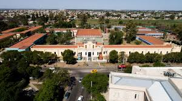
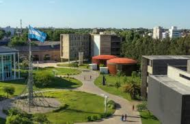

Apoyo Educativo
El apoyo educativo está orientado a mejorar el proceso de aprendizaje de estudiantes que requieren acompañamiento adicional, ya sea por dificultades escolares o por contextos específicos.
- Psicopedagogía: diagnóstico y seguimiento de dificultades de aprendizaje.
- Acompañantes terapéuticos escolares: apoyo personalizado dentro del aula.
- Integración escolar: acompañamiento a estudiantes con discapacidad.
- Orientación vocacional: ayuda para elegir una carrera o proyecto de vida.
- Talleres de habilidades blandas: autoestima, comunicación y trabajo en equipo.
La universiad UPC
La Universidad Provincial de Córdoba (UPC) es una institución pública argentina que ofrece educación superior de forma gratuita. Fue creada en 2007 y está conformada por cuatro facultades y varias sedes en la provincia de Córdoba.

Para mas información accede a su pagina
La universiad UNSAM
La Universidad Nacional de General San Martín (UNSAM) es una universidad pública y gratuita de Argentina, fundada en 1992, que ofrece una amplia oferta académica en diversas áreas como ciencias sociales, humanas, exactas y naturales

Para mas información accede a su pagina
Volver